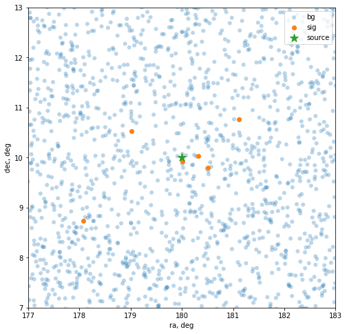

Time-integrated point source search analysis example
Software setup
[1]:
import sys
# Add skyllh and i3skyllh projects to the PYTHONPATH
sys.path.insert(0, '/opt/nu-workshop-software/skyllh')
sys.path.insert(0, '/opt/nu-workshop-software/i3skyllh')
# Add missing python packages from cvmfs
sys.path.insert(-1, '/cvmfs/icecube.opensciencegrid.org/py3-v4.1.1/RHEL_7_x86_64/lib/python3.7/site-packages')
Create datasets object
The i3skyllh.analyses.kdepdf_mcbg_ps.analysis support datasets where PDFs are pre-generated using the KDE method:
NorthernTracks_v005p00_KDE_PDF_v007: IC86_2011 -- IC86_2019
NorthernTracks_v005p01_KDE_PDF_v007: IC86_2011 -- IC86_2021 (with additionally added NuTau simulation datasets to MC)
The following analyses should support all datasets as they generate PDFs either from experimental or MC data:
i3skyllh.analyses.trad_diffuse_ps.analysis: uses MC data for PDF generation
i3skyllh.analyses.trad_stacking.analysis: same as above, with additional support for stacking multiple sources
i3skyllh.analyses.IC170922A_wGFU.analysis: uses scrambled experimental data for PDF generation
[2]:
import numpy as np
import matplotlib.pyplot as plt
from skyllh.core.config import CFG
from skyllh.core.random import RandomStateService
from skyllh.core.timing import TimeLord
from skyllh.physics.source import PointLikeSource
# Pre-defined datasets
from i3skyllh.datasets import data_samples
#Pre-defined analysis
from i3skyllh.analyses.kdepdf_mcbg_ps import analysis as kde_analysis
[3]:
# Update global settings to use 2 cpu cores
CFG['multiproc']['ncpu'] = 2
[4]:
# `data_samples` contains common datasets
print('\n'.join(data_samples.keys()))
DiffuseNorthernTracks
DiffuseNorthernTracks_v001p00
FastResponse
FastResponse_v001p00
GammaRays5yr_GalPlane
GammaRays5yr_PointSrc
GFU
GFU_v002p01
GFU_v002p02
GFU_v002p03
GFU_v002p04
GFU_v002p05
NorthernTracks
NorthernTracks_v001p00
NorthernTracks_v001p01
NorthernTracks_v002p00
NorthernTracks_v002p01
NorthernTracks_v002p02
NorthernTracks_v002p05
NorthernTracks_v002p05_KDE_PDF_v001
NorthernTracks_v002p06
NorthernTracks_v003p00_KDE_PDF_v002
NorthernTracks_v003p00_KDE_PDF_v003
NorthernTracks_v003p01_KDE_PDF_v004
NorthernTracks_v003p01_KDE_PDF_v005
NorthernTracks_v003p01_KDE_PDF_v006
NorthernTracks_v003p01_KDE_PDF_v007
NorthernTracks_v003p01_KDE_PDF_v008
NorthernTracks_v003p01_KDE_PDF_v010
NorthernTracks_v003p01_KDE_PDF_v200
NorthernTracks_v003p02
NorthernTracks_v003p02_KDE_PDF_v514
NorthernTracks_v003p02_KDE_PDF_v200
NorthernTracks_v003p03_KDE_PDF_v001
NorthernTracks_v004p02_KDE_PDF_v003
NorthernTracks_v004p03_KDE_PDF_v003
NorthernTracks_v004p03_KDE_PDF_v003_abs_plus5
NorthernTracks_v004p03_KDE_PDF_v003_scat_plus5
NorthernTracks_v004p03_KDE_PDF_v003_holeice_p0_minus1
NorthernTracks_v004p03_KDE_PDF_v003_holeice_p0_plus1
NorthernTracks_v004p03_KDE_PDF_v003_holeice_base
NorthernTracks_v004p04_KDE_PDF_v004
NorthernTracks_v004p04_KDE_PDF_v004_abs_plus5
NorthernTracks_v004p04_KDE_PDF_v004_abs_plus5_undo_sys
NorthernTracks_v004p04_KDE_PDF_v005
NorthernTracks_v004p04_KDE_PDF_v005_abs_plus5
NorthernTracks_v004p04_KDE_PDF_v005_abs_plus5_undo_sys
NorthernTracks_v004p04_KDE_PDF_v005_scat_plus5
NorthernTracks_v004p04_KDE_PDF_v005_scat_plus5_undo_sys
NorthernTracks_v004p04_KDE_PDF_v005_holeice_base
NorthernTracks_v004p04_KDE_PDF_v005_holeice_p0_minus1
NorthernTracks_v004p04_KDE_PDF_v005_holeice_p0_minus1_undo_sys
NorthernTracks_v004p04_KDE_PDF_v005_holeice_p0_plus1
NorthernTracks_v004p04_KDE_PDF_v005_holeice_p0_plus1_undo_sys
NorthernTracks_v004p06_KDE_PDF_v007_IC86only
NorthernTracks_v004p06_KDE_PDF_v007_IC79_IC86
NorthernTracks_v004p06_KDE_PDF_v007_IC86only_toydata
NorthernTracks_v004p06_KDE_PDF_v007_IC86only_toydata_2016
NorthernTracks_v004p06_KDE_PDF_v007_IC86_20XX
NorthernTracks_v004p06_KDE_PDF_v007_IC86only_no_exp_data
NorthernTracks_v004p06_KDE_PDF_v007_IC86only_shrink_MC
NorthernTracks_v004p07_KDE_PDF_v007_IC86only
NorthernTracks_v004p08_KDE_PDF_v007_IC86only
NorthernTracks_v005p00_KDE_PDF_v007_IC86only
NorthernTracks_v005p00_KDE_PDF_v007
NorthernTracks6yr
NorthernTracks8yr
PointSourceTracks
PointSourceTracks_v001p00
PointSourceTracks_v002p00
PointSourceTracks_v002p01
PointSourceTracks_v002p02
PointSourceTracks_v002p03
PointSourceTracks_v003p00
PointSourceTracks_v003p01
PointSourceTracks_v003p02
TransientTracks
TransientTracks_v001p00
TransientTracks_v001p01
TransientTracks_v001p02
[5]:
# Specify base path for datasets
data_base_path = '/data/ana/analyses'
# Load specific dataset collection
dsc = data_samples['NorthernTracks_v005p00_KDE_PDF_v007'].create_dataset_collection(
base_path=data_base_path)
# Pick a dataset or create a list of datasets from the dataset collection
datasets = dsc.get_datasets('IC86_2011-IC86_2019')
[6]:
# Define some common analysis parameters
refplflux_gamma = 2.0
minimizer_impl = None
optimize_delta_angle = 15.0
rss_seed = 0
Create the analysis object
[7]:
# Define initial source object
source = PointLikeSource(ra=np.deg2rad(0.), dec=np.deg2rad(0.))
[8]:
ana_kde = kde_analysis.create_analysis(
datasets,
source,
bkg_event_rate_field_names=['astro', 'conv'],
refplflux_gamma=refplflux_gamma,
fit_gamma=True,
livetime_list=None,
compress_data=True,
minimizer_impl = None,
ns_seed=10,
evt_sel_meth='spatialbox',
optimize_delta_angle=optimize_delta_angle
)
[==========================================================] 100% ELT 0h:00m:05s
[==========================================================] 100% ELT 0h:00m:27s
[9]:
# Generate background trials
rss = RandomStateService(rss_seed)
res_kde_bg = ana_kde.do_trials(rss, n=10, mean_n_sig=0)
[==========================================================] 100% ELT 0h:00m:02s
[10]:
print(res_kde_bg)
print(res_kde_bg.dtype)
[( 0, 0., 0, 0., 0. , 0. , 4.32 )
( 0, 0., 0, 0., 1.21271706, 21.23037032, 4.32 )
( 0, 0., 0, 0., 9.01908854, 45.88625054, 3.26054356)
( 0, 0., 0, 0., 3.18068896, 34.29298547, 4.304168 )
( 0, 0., 0, 0., 1.84836277, 15.58076763, 2.85521549)
(2357136044, 0., 0, 0., 0.42464366, 12.35818168, 4.32 )
(2357136044, 0., 0, 0., 0. , 0. , 4.32 )
(2357136044, 0., 0, 0., 0.75896145, 4.11593086, 2.46722167)
(2357136044, 0., 0, 0., 0. , 0. , 4.32 )
(2357136044, 0., 0, 0., 0.10965291, 5.86736425, 3.76596544)]
[('seed', '<i8'), ('mean_n_sig', '<f8'), ('n_sig', '<i8'), ('mean_n_sig_0', '<f8'), ('ts', '<f8'), ('ns', '<f8'), ('gamma', '<f8')]
[11]:
# Generate signal trials
rss = RandomStateService(rss_seed)
res_kde_sig = ana_kde.do_trials(rss, n=10, mean_n_sig=10)
[==========================================================] 100% ELT 0h:00m:03s
[12]:
res_kde_sig
[12]:
array([( 0, 10., 17, 0., 33.89473687, 6.83243832, 1.72601027),
( 0, 10., 11, 0., 38.27240369, 23.33243568, 2.29233034),
( 0, 10., 8, 0., 17.28659423, 10.0379805 , 2.08599903),
( 0, 10., 12, 0., 53.18912891, 14.19218552, 1.94005555),
( 0, 10., 8, 0., 5.63640429, 12.33887108, 2.45187456),
(2357136044, 10., 6, 0., 15.59138863, 6.05664926, 1.90644407),
(2357136044, 10., 10, 0., 32.04935684, 11.63282164, 1.97287869),
(2357136044, 10., 13, 0., 52.04710171, 14.58093905, 1.90490158),
(2357136044, 10., 10, 0., 34.96024899, 14.80401748, 2.12596618),
(2357136044, 10., 11, 0., 30.6592404 , 26.47856509, 2.4626625 )],
dtype=[('seed', '<i8'), ('mean_n_sig', '<f8'), ('n_sig', '<i8'), ('mean_n_sig_0', '<f8'), ('ts', '<f8'), ('ns', '<f8'), ('gamma', '<f8')])
[13]:
# Change source
new_source = PointLikeSource(ra=np.deg2rad(180.), dec=np.deg2rad(10.))
ana_kde.change_source(new_source)
[14]:
# Use TimeLord object to time code execution
tl = TimeLord()
with tl.task_timer('Running signal trials.'):
rss = RandomStateService(rss_seed)
res_kde_sig_new = ana_kde.do_trials(rss, n=10, mean_n_sig=10, tl=tl)
print(tl)
[==========================================================] 100% ELT 0h:00m:03s
TimeLord: Executed tasks:
[Calculate total MC background mean. ] 0.012 sec/iter (2)
[Calculate MC background event probability cache.] 0.044 sec/iter (2)
[ESM-DecBand: Calculate mask_dec ] 0.035 sec/iter (2)
[ESM-DecBand: Calculate mask. ] 0.002 sec/iter (2)
[ESM-DecBand: Create selected_events. ] 0.303 sec/iter (2)
[Pre-select MC events. ] 0.342 sec/iter (2)
[Calculate selected MC background mean. ] 0.004 sec/iter (10)
[Get p array. ] 0.005 sec/iter (10)
[Draw MC background indices. ] 0.188 sec/iter (10)
[Select MC background events from indices. ] 0.057 sec/iter (10)
[Scramble MC background data. ] 0.005 sec/iter (10)
[Remove MC specific data fields from MC events. ] 4.4e-05 sec/iter (10)
[Generating background events for data set 0. ] 0.399 sec/iter (10)
[Generating signal events. ] 0.005 sec/iter (10)
[Generating pseudo data. ] 0.407 sec/iter (10)
[Initializing trial. ] 0.031 sec/iter (10)
[Create fitparams dictionary. ] 9.1e-06 sec/iter (128)
[Calc fit param dep data fields. ] 2.6e-06 sec/iter (128)
[Get sig prob. ] 0.014 sec/iter (128)
[Get PDF event data. ] 4.9e-05 sec/iter (10)
[Get prob from photospline fit. ] 0.005 sec/iter (10)
[Normalize MultiDimGridPDF with norm factor. ] 2.8e-05 sec/iter (10)
[Get bkg prob. ] 4.0e-04 sec/iter (128)
[Calc PDF ratios. ] 2.9e-04 sec/iter (128)
[Calc pdfratio values. ] 0.014 sec/iter (128)
[Calc pdfratio value product Ri ] 5.9e-05 sec/iter (128)
[Calc logLamds and grads ] 0.001 sec/iter (128)
[Evaluate llh-ratio function. ] 0.017 sec/iter (128)
[Minimize -llhratio function. ] 0.215 sec/iter (10)
[Maximizing LLH ratio function. ] 0.215 sec/iter (10)
[Calculating test statistic. ] 3.2e-05 sec/iter (10)
[Running signal trials. ] 3.324 sec/iter (1)
Some utility functions
[15]:
from skyllh.core.analysis_utils import (
estimate_sensitivity,
estimate_discovery_potential,
create_trial_data_file
)
[16]:
help(estimate_sensitivity)
Help on function estimate_sensitivity in module skyllh.core.analysis_utils:
estimate_sensitivity(ana, rss, h0_trials=None, h0_ts_quantile=0.5, p=0.9, eps_p=0.005, mu_range=None, min_dmu=0.5, bkg_kwargs=None, sig_kwargs=None, ppbar=None, tl=None, pathfilename=None)
Estimates the mean number of signal events that whould have to be
injected into the data such that the test-statistic value of p*100% of all
trials are larger than the critical test-statistic value c, which
corresponds to the test-statistic value where h0_ts_quantile*100% of all
null hypothesis test-statistic values are larger than c.
For sensitivity h0_ts_quantile, and p are usually set to 0.5, and 0.9,
respectively.
Parameters
----------
ana : Analysis
The Analysis instance to use for sensitivity estimation.
rss : RandomStateService
The RandomStateService instance to use for generating random
numbers.
h0_trials : (n_h0_ts_vals,)-shaped ndarray | None
The strutured ndarray holding the trials for the null-hypothesis.
If set to `None`, the number of trials is calculated from binomial
statistics via `h0_ts_quantile*(1-h0_ts_quantile)/eps**2`,
where `eps` is `min(5e-3, h0_ts_quantile/10)`.
h0_ts_quantile : float, optional
Null-hypothesis test statistic quantile that defines the critical value.
p : float, optional
Desired probability of the signal test statistic value to exceed
the null-hypothesis test statistic value threshold, which is defined
through the `h0_ts_quantile` value.
eps_p : float, optional
Precision in `p` for execution to break.
mu_range : 2-element sequence | None
Range to search for the mean number of signal events.
If set to None, the range (0, 10) will be used.
min_dmu : float
The minimum delta mu to use for calculating the derivative dmu/dp.
The default is ``0.5``.
bkg_kwargs : dict | None
Additional keyword arguments for the `generate_events` method of the
background generation method class. An usual keyword argument is
`poisson`.
sig_kwargs : dict | None
Additional keyword arguments for the `generate_signal_events` method
of the `SignalGenerator` class. An usual keyword argument is
`poisson`. If `poisson` is set to True, the actual number of
generated signal events will be drawn from a Poisson distribution
with the mean number of signal events, mu.
ppbar : instance of ProgressBar | None
The possible parent ProgressBar instance.
tl: instance of TimeLord | None
The optional TimeLord instance that should be used to collect timing
information about this function.
pathfilename : string | None
Trial data file path including the filename.
If set to None, generated trials won't be saved.
Returns
-------
mu : float
Estimated median number of signal events to reach desired sensitivity.
mu_err : float
The uncertainty of the estimated mean number of signal events.
[17]:
n_trials = 10
pathfilename = './trials.npy'
_ = create_trial_data_file(ana_kde, rss, n_trials, mean_n_sig=(0, 2), mean_n_sig_null=0, pathfilename=pathfilename)
[==========================================================] 100% ELT 0h:00m:10s
[18]:
trials = np.load(pathfilename)
print(trials)
print(trials.dtype)
[( 0, 0., 0, 0., 2.37792439, 29.47689755, 3.47483629)
( 0, 0., 0, 0., 3.66065822, 37.62555335, 3.62767194)
( 0, 0., 0, 0., 0. , 0. , 4.32 )
( 0, 0., 0, 0., 0. , 0. , 4.32 )
( 0, 0., 0, 0., 0.25702203, 6.94773778, 3.09499838)
( 67063811, 0., 0, 0., 0.05713375, 3.8414052 , 3.39262385)
( 67063811, 0., 0, 0., 0. , 0. , 4.32 )
( 67063811, 0., 0, 0., 0. , 0. , 1.35002828)
( 67063811, 0., 0, 0., 0.16680563, 8.41961013, 4.16223629)
( 67063811, 0., 0, 0., 2.22488861, 30.99016472, 3.82911278)
( 0, 1., 3, 0., 8.0467189 , 1.39964911, 1.37576735)
( 0, 1., 2, 0., 0. , 0. , 4.32 )
( 0, 1., 1, 0., 4.46716848, 1.76233826, 1.73617887)
( 0, 1., 0, 0., 0. , 0. , 3.03507199)
( 0, 1., 2, 0., 2.95189502, 17.32074596, 3.06333542)
(1800623582, 1., 0, 0., 9.83445431, 72.03145667, 4.32 )
(1800623582, 1., 1, 0., 6.12507595, 9.25940022, 2.39255974)
(1800623582, 1., 2, 0., 3.54933406, 2.4776351 , 2.10860974)
(1800623582, 1., 1, 0., 0.03388731, 3.4568177 , 3.66095955)
(1800623582, 1., 1, 0., 1.19500726, 22.75836463, 3.64017462)
( 0, 2., 0, 0., 0.63129585, 17.76483837, 4.32 )
( 0, 2., 2, 0., 0.01184192, 2.02393431, 3.50726588)
( 0, 2., 5, 0., 2.86855185, 3.81873242, 1.97726715)
( 0, 2., 1, 0., 7.43039518, 1.46128633, 1.68402272)
( 0, 2., 0, 0., 0. , 0. , 4.32 )
(1658140526, 2., 1, 0., 0.10573184, 7.03460841, 4.1901281 )
(1658140526, 2., 2, 0., 4.85916012, 6.66183162, 2.45855972)
(1658140526, 2., 4, 0., 4.14477516, 5.57337326, 2.07715215)
(1658140526, 2., 0, 0., 0.80666454, 2.47472006, 2.55607052)
(1658140526, 2., 2, 0., 0. , 0. , 1.70437017)]
[('seed', '<i8'), ('mean_n_sig', '<f8'), ('n_sig', '<i8'), ('mean_n_sig_0', '<f8'), ('ts', '<f8'), ('ns', '<f8'), ('gamma', '<f8')]
Pseudo data example
[19]:
# Generate background events.
(bg_n_events_list, bg_events_list) = ana_kde.generate_background_events(
rss=rss,
)
# Generate signal events.
(n_sig, sig_n_events_list, sig_events_list) = ana_kde.generate_signal_events(
rss=rss,
mean_n_sig=10
)
[20]:
print(sig_events_list[0])
DataFieldRecordArray: 17 fields, 6 entries, 2 Kbytes
fields = {
zen : {dtype: float32, vmin: 1.717e+00, vmax: 1.757e+00}
dec : {dtype: float32, vmin: 1.526e-01, vmax: 1.878e-01}
ra : {dtype: float32, vmin: 3.108e+00, vmax: 3.161e+00}
run : {dtype: int64, vmin: 2.112e+04, vmax: 2.122e+04}
time : {dtype: float32, vmin: 5.678e+04, vmax: 5.678e+04}
azi : {dtype: float32, vmin: 1.316e+00, vmax: 5.498e+00}
log_energy : {dtype: float32, vmin: 3.313e+00, vmax: 6.240e+00}
ang_err : {dtype: float32, vmin: 3.472e-03, vmax: 2.033e-02}
true_energy : {dtype: float32, vmin: 9.641e+03, vmax: 4.491e+06}
true_ra : {dtype: float32, vmin: 2.198e-01, vmax: 5.741e+00}
true_dec : {dtype: float32, vmin: 1.544e-01, vmax: 1.876e-01}
mcweight : {dtype: float64, vmin: 5.034e+03, vmax: 1.522e+10}
astro : {dtype: float32, vmin: 1.501e-12, vmax: 4.635e-12}
conv : {dtype: float32, vmin: 1.096e-14, vmax: 1.437e-10}
log10_ang_err: {dtype: float32, vmin: -2.459e+00, vmax: -1.692e+00}
sin_dec : {dtype: float32, vmin: 1.520e-01, vmax: 1.867e-01}
sin_true_dec : {dtype: float32, vmin: 1.538e-01, vmax: 1.865e-01}
}
[21]:
delta_angle = 3.0
plt.figure(figsize=(8, 8))
# Scatter background and signal events.
plt.scatter(np.rad2deg(bg_events_list[0]['ra']), np.rad2deg(bg_events_list[0]['dec']), label='bg', alpha=0.3, edgecolors='none')
plt.scatter(np.rad2deg(sig_events_list[0]['ra']), np.rad2deg(sig_events_list[0]['dec']), label='sig')
plt.scatter(np.rad2deg(new_source.ra), np.rad2deg(new_source.dec), marker='*', label='source', s=150)
plt.xlabel('ra, deg')
plt.ylabel('dec, deg')
plt.xlim(np.rad2deg(new_source.ra) - delta_angle, np.rad2deg(new_source.ra) + delta_angle)
plt.ylim(np.rad2deg(new_source.dec) - delta_angle, np.rad2deg(new_source.dec) + delta_angle)
plt.legend()
[21]:
<matplotlib.legend.Legend at 0x7f408e557c40>

[ ]: